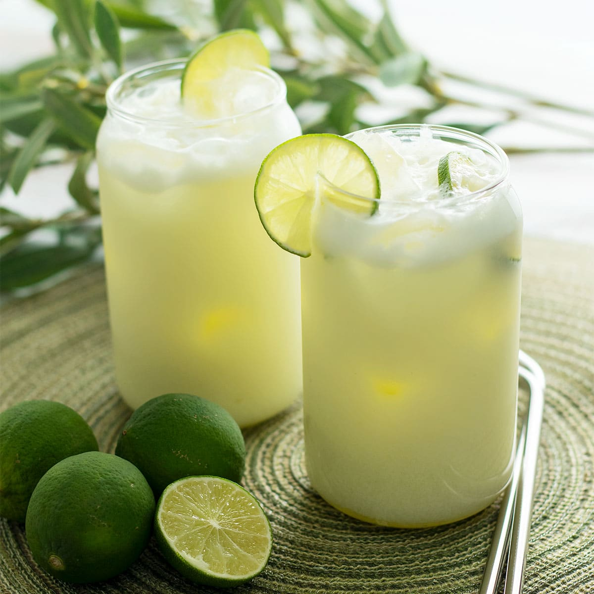

Brazilian Lemonade (Limonada Suíça)
A creamy, frothy, and incredibly refreshing drink from Brazil. Made with whole limes and sweetened condensed milk, it's a unique and delicious twist on classic lemonade that's ready in minutes!

Ingredients
- 2 large, juicy limes
- 4 cups of cold water
- 1/2 cup sweetened condensed milk (or to taste)
- 1/4 cup sugar (optional, to taste)
- Plenty of ice cubes for serving
Instructions
- Wash the limes thoroughly. Cut off the hard ends and slice each lime into 8 pieces.
- Place the lime pieces and 3 cups of the cold water into a blender.
- Pulse the blender 3 to 5 times for just a few seconds. Do not over-blend, or the drink will become too bitter from the white pith.
- Pour the mixture through a fine-mesh strainer into a pitcher to remove all the lime solids. Use a spoon to press the pulp and extract all the liquid.
- Discard the solids. Pour the strained lime liquid back into the (rinsed) blender.
- Add the sweetened condensed milk, the remaining 1 cup of water, and sugar (if using).
- Blend again for about 30 seconds until smooth and frothy.
- Fill glasses with ice cubes and pour the Brazilian Lemonade over top.
- Serve immediately and enjoy the refreshing taste!